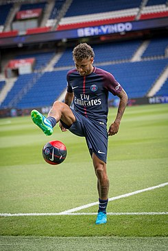

inicio
HISTORIA
Neymar nació el 5 de febrero de 1992 en Mogi das Cruzes, estado de São Paulo, Brasil.
Padres
Hijo de Neymar Santos y Nadine da Silva. Heredó el nombre de su padre, un exfutbolista que se convirtió en su asesor desde el inicio.
Con el éxito de su carrera la familia compró su primera propiedad, una casa al lado de la Vila Belmiro.
Futbolista
Neymar combinó su amor por el fútbol sala con el fútbol callejero y desde muy pequeño llamaba la atención de grandes equipos de fútbol. Su ídolo es el también futbolista robinho.
En 2003, se trasladó con su familia a São Vicente, donde comenzó a jugar para el equipo juvenil Portuguesa Santista.
Santos
Con tan solo once años, Neymar fue fichado por el Santos, uno de los equipos brasileños más importantes.
Reconocido por su velocidad y habilidad en el regate. Comenzó rápidamente a destacar en las categorías inferiores, tanto que el Real Madrid se interesó por él en 2005, aunque al final no llegaron a un acuerdo.
Con solo diecisiete años debutó el 7 de marzo de 2009 profesionalmente, una semana después anotó su primer gol para el Santos contra el Mogi Mirim. Un mes más tarde, el 11 de abril, Neymar marcó el gol decisivo en la victoria por 2-1 ante el Palmeiras en la semifinal de ida 2009 Campeonato Paulista. En su primera temporada, Neymar acumuló 14 goles en 48 partidos.

Selección brasileña
Fue con la selección de Brasil en 2009 al Mundial de Fútbol Sub 17. Tras el Mundial de Sudáfrica, en 2010, le convocaron para jugar por primera vez con la selección absoluta. Debutó jugando contra Estados Unidos, y marcó un gol.
Tuvo una gran actuación en el Sudamericano Sub 20 de Perú, celebrado a principios de 2011, siendo pichichi tras marcar nueve tantos. Brasil ganó el campeonato y se clasificó para participar en los Juegos Olímpicos de Londres 2012.
En el primer partido amistoso de Brasil el 20 de julio de 2012, en contra de la nación anfitriona Gran Bretaña en el Riverside Stadium, Neymar participó en los dos goles de la victoria por 2-0. El 26 de julio de 2012, anotó su primer gol de los Juegos Olímpicos de 2012 en el primer partido de Brasil contra Egipto, que dio la victoria por 3-2 para Brasil. En el siguiente partido contra Bielorrusia, coló un tiro libre asegurado su lugar para los cuartos de final con una victoria por 3-1.
El 5 de agosto de 2012, contra Honduras, marcó de penalti, su tercer gol del torneo y asistió en el segundo gol de Leandro Damião, ganaron por 3-2 llegando hasta las semifinales al final del torneo.
Neymar anotó su primer hat-trick internacional absoluto el 10 de septiembre de 2012, en la victoria por 8-0 sobre China en el estadio José do Rego Maciel en Recife. El 19 de septiembre, marcó un gol contra Argentina a la que con un 2-1 se le ganó el partido de ida del Superclásico de las Américas de 2012 celebrado en el Estadio Serra Dourada en Goiânia, Brasil.
El Real Madrid manifestó su interés por fichar a Neymar y parecía que habían llegado a un acuerdo ya que el club blanco comunicó que el jugador llegaría a Madrid en el mes de diciembre de 2011. El Real Madrid pagaría hasta 56 millones de euros su fichaje. Pero Neymar fichó por el Santos hasta 2014 según el contrato que firmó el 9 de noviembre de 2011 con el club paulista, según el cual permanecerá al menos hasta el próximo Mundial en el club a cambio de ver incrementados sus ingresos hasta un nivel equivalente al que recibiría en el Real Madrid, Barcelona u otro gran club.
Nominado para el FIFA Balón de Oro en 2011 y 2012.
F.C. Barcelona
"El FC Barcelona ha llegado a un principio de acuerdo con el Santos y con Neymar para la incorporación del jugador las próximas cinco temporadas". Con este mensaje vía Twitter, a las 3.15 de la madrugada hora española del 26 de mayo de 2013, el Barcelona anunció el fichaje hasta 2018 del delantero brasileño.
En el encuentro de la primera jornada de Liga 2013/14, debutó en partido oficial frente al Levante UD. El 21 de agosto, marcó su primer gol oficial con el Barcelona en el primer partido de la Supercopa de España de Fútbol 2013 contra el Atlético Madrid.
Su debut en liga fue el 24 de marzo del 2013, frente a la Real Sociedad.
El 18 de septiembre, hizo su debut en la UEFA Champions League, en el que el Barça derrotó al AFC Ajax por 4-0. El 24 de septiembre, Neymar anotó su primer gol en la Liga frente a la Real Sociedad en el Camp Nou. El 26 de octubre hizo su primera aparición en El Clásico, anotando el primer gol y la asistencia al gol de la victoria del Barcelona anotado por Alexis Sánchez, que derrotó al Real Madrid por 2-1 en el Camp Nou.
El 11 de diciembre, marcó sus tres primeros goles de la Champions League, y se anotándose un hat-trick en la victoria por 6-1 sobre el Celtic en Barcelona.
El 4 de julio, durante la Copa Mundial de Fútbol de 2014, en el partido de cuartos de final con la selección de Brasil frente a Colombia, sufrió la fractura de la tercera vértebra lumbar tras recibir un rodillazo de Camilo Zuñiga que le obligó a quedar fuera del torneo.
El 13 de septiembre de 2014, anotó dos goles venciendo al Athletic de Bilbao por 2-0. El 27 de septiembre, marcó un 'hat-trick' ante el Granada en la victoria por 6-0. El 11 de enero de 2015, formando parte de la llamada "santa trinidad" de Barcelona formada por Neymar, luis suarez y lionel messi anotó en casa 3-1 venciendo al defensor del título de Liga, el Atlético de Madrid.
El 6 de junio de 2015 logró la copa de Europa tras vencer a la Juventus en Berlín. El Barcelona obtuvo tres trofeos en esta temporada. La Liga BBVA, la Copa del Rey y la Champions League, en este orden.
Se tatuó los aros olímpicos en el brazo tras la conquista de la medalla de Oro de los Juegos Olímpicos de Rio 2016.
París Saint-Germain F.C.
El 3 de agosto de 2017, se confirmó su fichaje por el París Saint-Germain F. C. convirtiéndose en el jugador más caro de la historia —222 millones de euros— tras firmar un contrato por cinco temporadas con el club francés. Un acuerdo por el que percibirá en torno a 30 millones por temporada.
La Copa Mundial de Fútbol de 2018 fue la segunda en la que Neymar participó con la Selección Brasileña, aunque no lograron pasar de los Cuartos de Final.
Neymar es reconocido por su fe cristiana; aporta un 10% de sus ingresos a la iglesia.